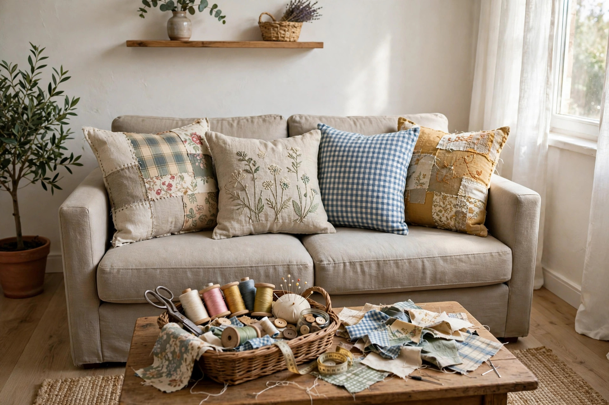

Budget Decor & DIY
DIY Throw Pillow Covers for Under $10 Each
Intro
New throw pillows can cost $25 each in a shop, but the pillow inside is usually fine — it is the cover that is tired, stained or the wrong colour. A new cover changes the whole sofa for under $10, and making it yourself means the size, the fabric and the colour are exactly right for a small room. You do not need to be good at sewing: half of these ideas need no sewing at all.
This guide has 12 DIY throw pillow cover ideas — simple sewing, no-sew and fabric choices for small sofas, each under $10. Start with one cover in a colour already in your room, and the sofa will look new by tonight.

1. The envelope cover: two seams, no zip — $5–$8
An envelope cover is the easiest sewn cover there is: one rectangle of fabric, folded over at the back, with two side seams. A metre of cotton fabric costs about $6 and makes one standard cover. Cut the fabric 5 cm wider than the pillow on each side, fold the back panels so they overlap, and sew the two sides. No zip, no buttons, and the cover comes off for washing in seconds. This is the first cover every beginner should make.
2. No-sew cover from a tea towel — $3–$5
A large tea towel or a dinner napkin, folded around a pillow and tied or tucked at the back, is a cover with no sewing at all. A tea towel costs about $3, and a patterned one looks like a designer cover. Choose a towel slightly larger than the pillow, fold the corners in like wrapping a present, and tuck the last flap under. It will not survive a washing machine, so use it on a pillow that stays decorative — and change the towel when you want a new look.
3. A pillowcase cover: cut, fold, done — $2–$4
A standard pillowcase is already a cover — it just needs shortening. Take a pillowcase in a colour you like, fold the open end inside to fit a square throw pillow, and stitch or iron-on tape the fold. A pillowcase costs about $3, and charity shops sell them for less. Striped and plain pillowcases work best; busy patterns can look messy at throw-pillow size. This is the fastest cover in this guide: ten minutes, start to finish.
4. Fabric glue instead of stitches — $6–$9
Fabric glue holds a folded cover together without a needle. Cut the fabric, fold it around the pillow, glue the seams and leave it to dry overnight. A bottle of fabric glue costs about $5, and the fabric about $4. Glue is not as strong as stitching, so use it on pillows that are looked at more than leaned on. Wash the cover by hand, not in a machine, and the glue will last for years.
5. An old shirt as a cover — $0–$3
A shirt you no longer wear is a free pillow cover: the buttons become the fastening, and the fabric is already soft and washed. Button the shirt around the pillow, tuck the sleeves inside, and cut off the excess below the last button. Flannel shirts make cosy winter covers; linen shirts make cool summer ones. A charity-shop shirt for $2 gives you a cover and a story, and no one will guess where it came from.
6. Iron-on patches for a plain cover — $4–$7
A plain cover in a good colour becomes a designer cover with two or three iron-on patches or a strip of iron-on trim. Patches cost about $2 each, and a plain cotton cover about $3. Iron a patch on each corner, or a row of trim along one edge, and the pillow looks bought, not made. Keep the patches small and the same colour family as the cover, so the pillow stays calm rather than busy.
7. A knitted cover from a charity-shop jumper — $3–$5
A chunky jumper, cut and sewn around a pillow, is the cosiest winter cover there is. A jumper from a charity shop costs about $4. Cut the body of the jumper to pillow size, sew three sides, slip the pillow in and sew the last side — or use the jumper's own buttons as the opening. The sleeves can be cut off and used as a second, smaller cover. Knitted covers are warm, textured and forgiving: a wobbly seam disappears into the knit.
8. Two fabrics, one cover: half and half — $6–$9
A cover made from two fabrics — a plain half and a patterned half — looks like a shop-bought designer piece and uses up fabric offcuts. Two half-metres of fabric cost about $8 together. Sew the two halves together down the middle, then make the cover as an envelope. Choose fabrics that share one colour, so the two halves look like a pair rather than a mistake. This is the best way to use up leftover curtain or cushion fabric.
9. A cover with a pom-pom or tassel edge — $5–$8
A plain cover with a pom-pom trim sewn or glued around the edge looks playful and expensive, and the trim costs about $3 a metre. Pick a trim in a colour that matches one other thing in the room — a throw, a rug, a picture frame — so the pillow ties the room together. Tassels suit a boho room; small pom-poms suit a child's room or a cosy reading corner. Glue the trim on if you do not sew, and keep the pillow out of the washing machine.
10. Outdoor fabric for a cover that survives everything — $7–$10
Outdoor fabric — the kind used for garden cushions — makes a throw cover that survives spills, pets and children, and it costs about $8 a metre. It wipes clean with a damp cloth, so it suits the pillow everyone actually leans on. Choose a plain outdoor fabric in a soft colour, because bright outdoor patterns can look harsh indoors. One outdoor cover on the everyday pillow, and pretty fabric covers on the decorative ones, is the practical split for a small flat.
11. A cover from a tablecloth or curtain offcut — $0–$5
A tablecloth or curtain you no longer use is a metre or more of free fabric. Cut a square from the plainest part, and make an envelope cover. Curtain fabric is heavier than cotton, so it holds its shape well on a large pillow. Check charity shops for single curtains — they often sell for $3 and make two covers. A cover made from a curtain that used to hang in the same room will always match, because it already does.
12. One new cover, the rest plain — $0
The cheapest idea costs nothing: change one cover, not all of them. A sofa with four matching pillows looks like a showroom; a sofa with three plain pillows and one new patterned cover looks like a home. Pick the cover in the middle, change it for the season — a warm colour in winter, a light one in summer — and leave the rest alone. In a small room, one changed pillow is a whole new sofa.
Conclusion
A throw pillow cover is the cheapest room makeover there is: under $10, one evening, and the sofa looks new. An envelope cover needs two seams, a tea towel needs none, and an old shirt needs only its own buttons. Start with the pillow you see first when you walk in, make one cover in a colour already in the room, and the whole living room will feel refreshed by tonight.
Budget recap
- Envelope cover (fabric + thread): ~$6 - Tea-towel no-sew cover: ~$4 - Old-shirt cover: ~$0
Total for a refreshed sofa: ~$6–$10 per cover — or $0 with a shirt or tablecloth you already own.
Pinterest pin titles
- DIY Throw Pillow Covers for Under $10 Each
- 12 Pillow Covers Under $10 (Half Need No Sewing)
- New Sofa Look for $10: 12 DIY Pillow Cover Ideas